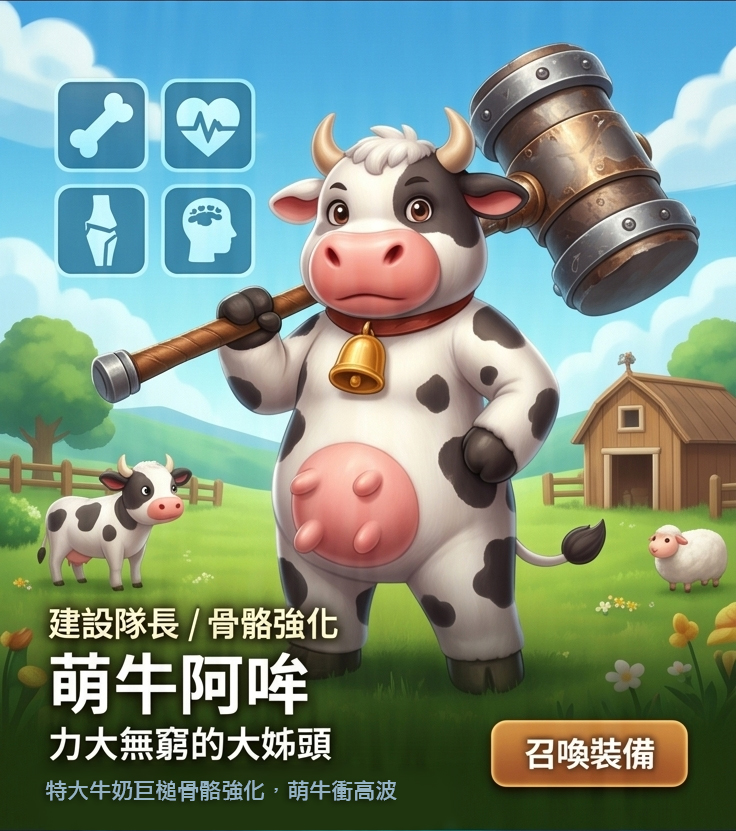
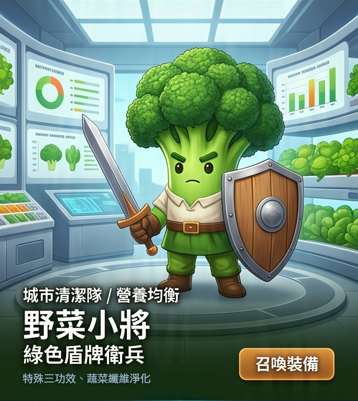
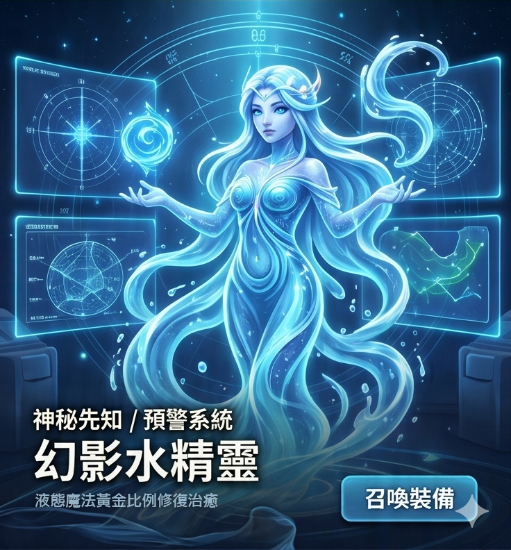

角色技能為虛構設定；商品資料維持原有正式內容。點擊角色圖片可播放登場音樂。
英雄圖鑑｜守護者聯盟
總指揮官 / 代謝管理

[Spoken Word]
絕不低頭！
因為...雙下巴會跑出來！
[Drop]
極纖雷射，啟動！
召喚裝備：極纖錠以此英雄出戰
Burner 姐
那個超酷的女生
性格：說話有點毒舌，但其實超關心大家。「絕不低頭，因為雙下巴會跑出來！」是她的口頭禪。
角色技能與商品資訊
⚡ 極纖雷射：專門對付「卡住不動」的壞東西，讓城市交通瞬間順暢。
極纖錠 裝備功效
- 衛福部核准健康食品：不易形成體脂肪
- 獨家 E.F.T. 三重黃金代謝配方
- 綠瑪黛 / 藤黃果 / L-肉酸 強化動能
🎵 英雄專屬登場 BGM
[Spoken Word]
絕不低頭！
因為...雙下巴會跑出來！
[Drop]
極纖雷射，啟動！
重裝火力 / 舒緩大師

[Spoken Word / Robotic Voice]
酸痛幽靈，偵測完畢。
音樂，準備。
[Drop]
8 點共震波！
酸痛掰掰舞，開始！
召喚裝備：酸痛按摩機以此英雄出戰
MJ 機器人
自帶 BGM 的節奏戰神
性格：不愛說話，喜歡用音樂解決問題。只要音樂一響，壞蛋就會被震得受不了。
角色技能與商品資訊
🎵 8 點共震波：跳起「酸痛掰掰舞」，把硬梆梆的石頭怪全部震碎。
酸痛按摩機 裝備功效
- 衛部醫器製字第006927號核可
- 雙頻道輸出，15段力度調整
- 12組不同模式 (包含TENS與EMS)
🎵 英雄專屬登場 BGM
[Spoken Word / Robotic Voice]
酸痛幽靈，偵測完畢。
音樂，準備。
[Drop]
8 點共震波！
酸痛掰掰舞，開始！
建設隊長 / 骨骼強化
[Intro]
(Heavy hammer strike sound)
[Chorus]
骨力重鎚！一鎚定音！
保護城市地基 絕不妥協！
看我的厲害，哞——！
召喚裝備：牛奶鈣魚膠原以此英雄出戰
萌牛阿哞
力大無窮的大姊頭
性格：穿著可愛乳牛裝，力氣卻大得嚇人！負責保護城市的地基不被壓垮。
角色技能與商品資訊
🔨 骨力重鎚：一鎚下去，讓大樓（骨骼）穩得像山一樣。
牛奶鈣魚膠原 裝備功效
- 衛福部核准「骨質保健」健康食品
- 三大成長要素：優質牛奶鈣＋魚膠原蛋白＋維生素D3
- 小分子水解配方好吸收零負擔
🎵 英雄專屬登場 BGM
[Intro]
(Heavy hammer strike sound)
[Chorus]
骨力重鎚！一鎚定音！
保護城市地基 絕不妥協！
看我的厲害，哞——！
皇家騎士 / 視力守護

[Pre-Chorus]
誓言保護靈魂之窗！
[Chorus]
藍光聖劍！揮劍斬斷刺眼射線！
還給 Bio-City 一片藍天！
葉寶 EX，出擊！
召喚裝備：3C葉黃素凍EX以此英雄出戰
葉寶 EX
對抗藍光的劍士
性格：熱血又正直，手拿聖劍與盾牌，誓言保護大家的「靈魂之窗」。
角色技能與商品資訊
⚔️ 藍光聖劍：揮劍斬斷刺眼的藍光射線，還給城市一片藍天。
3C葉黃素凍EX 裝備功效
- 葉黃素提升180%，最高劑量9mg
- 使用美國藍光專利游離型葉黃素
- 葉黃素與玉米黃素黃金比例10:2
🎵 英雄專屬登場 BGM
[Pre-Chorus]
誓言保護靈魂之窗！
[Chorus]
藍光聖劍！揮劍斬斷刺眼射線！
還給 Bio-City 一片藍天！
葉寶 EX，出擊！
巡邏小隊 / 兒童守護
[Pre-Chorus]
盞哥！美莓！葉寶！
我們是果凍三兄妹！
[Chorus]
陪小朋友一起「出凍」！
打擊壞蛋，超級合體技！
耶！
召喚裝備：3C葉黃素凍以此英雄出戰
果凍三兄妹
盞哥、美莓、葉寶性格：活潑好動的三胞胎。口號是：「陪小朋友一起『出凍』打擊壞蛋！」
角色技能與商品資訊
🛡️ 超級合體技：盞哥負責找壞人，美莓負責補水，葉寶負責擋子彈。
3C葉黃素凍 裝備功效
- 專為兒童設計，含 5MG 游離小分子葉黃素
- 結合日本專利紫米、馬奇莓與綜合維生素
- 每包均含維生素D 440IU，加強防護力
🎵 英雄專屬登場 BGM
[Pre-Chorus]
盞哥！美莓！葉寶！
我們是果凍三兄妹！
[Chorus]
陪小朋友一起「出凍」！
打擊壞蛋，超級合體技！
耶！
城市清潔隊 / 營養均衡
[Spoken Word]
注意！發現營養黑洞獸！
開始清掃作業！
[Chorus]
高纖盾牌，全面防禦！
把髒東西，通通掃出城外！
野菜小將，保持均衡，出發！
召喚裝備：野菜小將以此英雄出戰
野菜小將
綠色盾牌衛兵
性格：一絲不苟的清潔達人，最討厭城市裡堆滿垃圾。
角色技能與商品資訊
🛡️ 高纖盾牌：擋住想偷吃能量的壞蛋，把髒東西通通掃出城外。
野菜小將纖維粉 裝備功效
- 衛福部核准健康食品：胃腸功能改善、調節血脂血糖
- 日本專利Fibersol-2 與 菊苣萃取纖維 Inulin
- 添加牛乳蛋白胜肽 Peptone，幫助營養吸收
🎵 英雄專屬登場 BGM
[Spoken Word]
注意！發現營養黑洞獸！
開始清掃作業！
[Chorus]
高纖盾牌，全面防禦！
把髒東西，通通掃出城外！
野菜小將，保持均衡，出發！
神秘先知 / 預警系統
[Pre-Chorus]
我看見了...未來的危機。
不要怕，讓我來修補。
[Chorus]
液態魔法，溫柔流動。
快速灌溉你乾枯的視線...
守望著你，直到永遠。
召喚裝備：3C葉黃素飲以此英雄出戰
守望者 Oracle
幻影水精靈
性格：半透明的水做的身體，能看見未來的危機，隨時準備修補破洞。
角色技能與商品資訊
💧 液態魔法：像水一樣流動，快速灌溉乾枯的視線。
3C葉黃素飲 裝備功效
- 每包含 葉黃素 6MG，啟動液態防護
- 添加 藻油 DHA 與 神經鞘磷脂，支持學習力
- 專利微囊球包覆技術，液態好吸收
🎵 英雄專屬登場 BGM
[Pre-Chorus]
我看見了...未來的危機。
不要怕，讓我來修補。
[Chorus]
液態魔法，溫柔流動。
快速灌溉你乾枯的視線...
守望著你，直到永遠。